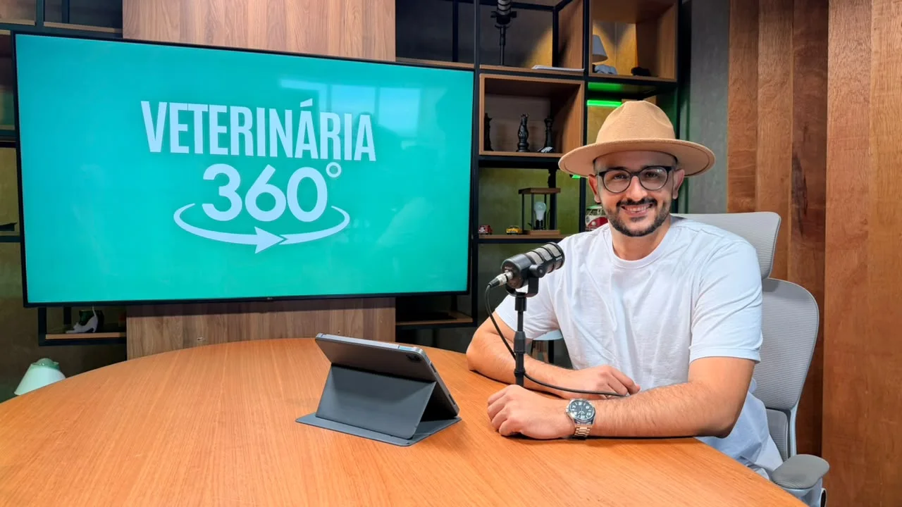
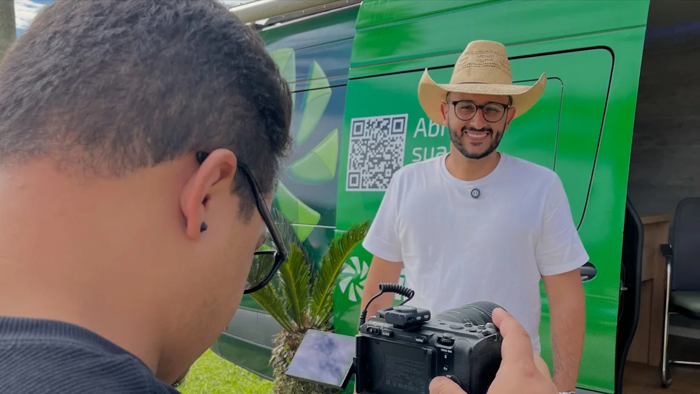

O podcast
Entrevistas de Dr. Rodrigo Carmo sobre medicina veterinária, da rotina no consultório ao trabalho no campo.
Como nasceu o podcast.
Dr. Rodrigo Carmo criou o Veterinária 360° para ouvir quem trabalha com medicina veterinária e levar essas conversas a quem cuida dos animais. Ao microfone, ele recebe veterinários, pesquisadores, professores, produtores rurais e empresários.
Os convidados trazem questões do consultório, da pesquisa e da vida no campo. Ao contar como trabalham, dão visibilidade a iniciativas e mostram onde a profissão faz parte do nosso dia a dia.
Uma ideia, muitas histórias e um olhar para o mundo.
O Veterinária 360 nasceu com o propósito de ampliar o espaço de diálogo sobre a medicina veterinária e os universos que se conectam a ela.
Idealizado e apresentado pelo médico-veterinário Dr. Rodrigo Carmo, o projeto surgiu da vontade de ouvir profissionais, conhecer trajetórias e compartilhar experiências de quem faz a diferença em suas áreas de atuação.
Ao longo de sua trajetória, o podcast se transformou em uma plataforma de comunicação, reunindo entrevistas com médicos-veterinários, pesquisadores, professores, produtores rurais, empresários e representantes de diferentes segmentos.
São histórias que revelam desafios, conquistas, descobertas e oportunidades, mostrando a diversidade de atuação da profissão e sua importância para a sociedade.
A comunicação também ultrapassou os limites do estúdio, alcançando emissoras de televisão, rádios, eventos e produções audiovisuais especiais.
Mais do que realizar entrevistas, o Veterinária 360 acredita no poder da comunicação para conectar pessoas, valorizar profissões e dar visibilidade a iniciativas que merecem ser conhecidas.

Do estúdio à estrada.
Depois das primeiras entrevistas em estúdio, vieram as feiras, as visitas a propriedades e as participações na televisão e no rádio.